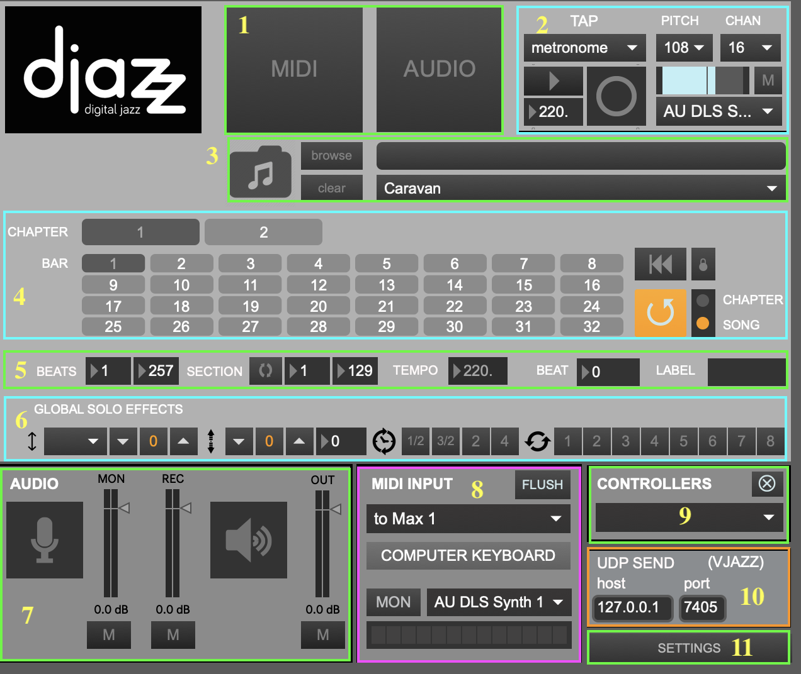
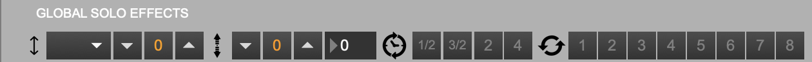
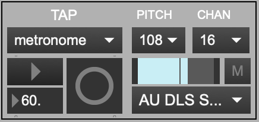
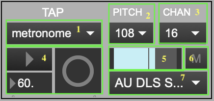
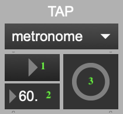
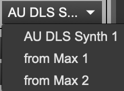
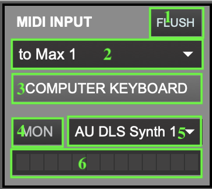

Main Window

1. MIDI/audio window selectors

Clicking on the button labeled “MIDI” or “Audio” will open and close the MIDI or audio interface window, respectively.
You can also use the key commands “m” (lowercase) to open/close the MIDI window or “a” (lowercase) to open/close the audio window.
3. Song selector

To load a song grid, select a song using one of these controls. Songs are loaded by selecting folders, not individual files. Each folder contains various files pertaining to the song like scores and JSON metadata files.
- Drag and drop a song folder here.
- Browse for a song folder. To select a song, click on its folder.
- Clear the current song.
- Select a preloaded song from the dropdown menu.
5. Data View

- BEATS: total number of beats in the song
- SECTION: whether section is looped, and number of beats in current section
- TEMPO: current tempo. Note: if the [beat input] comes from Djazz’s metronome or a remote metronome, this will not change. If the beat input is manual, or if the remote source is a manual tap, this may fluctuate.
- BEAT Number of current beat playing
- LABEL Label of current beat playing, according to the loaded song file
6. Global Effects

These effects are the same as the ones used in MIDI scores, MIDI tracks, and audio tracks. Changing a control in the global effects bar will change the corresponding effect in every one of these other effects bars.

Audio On
Clicking on either the microphone icon or the loudspeaker icon will turn the audio on.
Audio Monitor Level (Microphone)
Controls the monitor level of the audio input. The button labeled “M” below the microphone-icon button mutes audio input.
Audio Record Level
Controls the recorded volume level of the audio input. The button labeled “M” below the microphone-icon button mutes audio input.
Audio Out (Speakers)
Controls the level of the global audio output. The button labeled “M” below the loudspeaker-icon button mutes audio output.
When an external controller such as a Launchpad is plugged in, its name will appear in the dropdown menu. If Djazz supports it, selecting its name from the dropdown menu will open its interface window.
10. UDP Send Port Select
Select the host and port to send view messages from Djazz.
Subsections of Main Window

Djazz plays a beat each time it receives a message (a “tap,” or “click”), if it is engaged (how to engage Djazz will be explained below). When not engaged, it will not play when a beat message is received. When this is the case, you can click on bars or chapters (“cells” of the grid) in the song grid without triggering playback. Once engaged, djazz will begin playing on the next beat after a cell has been clicked on.
The cells of the grid change color depending on whether Djazz is engaged and whether a cell is currently playing or not. The colors represent the following:
- Light gray: not the current measure/chapter of the song
- Dark gray: the current measure measure/chapter of the song, but Djazz is not engaged
- Blue: the current measure measure/chapter of the song, but not playing
- Orange: the current measure measure/chapter of the song, and playing
There are three ways to send Djazz a beat message; you select one from the dropdown menu: manual, metronome, or remote. Selecting from the dropdown menu will change the controls on the left side of this box. When one option is selected, the other two are not responsive.

The right-hand side of the window lets you change the sound and output port of the click.
1. INPUT SELECTOR: Select if the input beat will come from one of the following:
- Djazz’s metronome
- a manual tap from the user
- a remote source, such as another DAW.

2. OUTPUT CLICK MIDI PITCH: Changes the pitch of the click. The number indicates the MIDI value of the pitch.
3. OUTPUT CLICK MIDI CHANNEL: The MIDI channel of the click (1-16).
4. SELECTED INPUT VIEW: metronome, manual, or remote.
5. OUTPUT CLICK VOLUME CONTROL: The volume of the click. When muted, this will be gray.
6. OUTPUT CLICK MUTE BUTTON: Mutes/unmutes the click
7. OUTPUT CLICK MIDI PORT: The output port of the click.
Metronome

- The button marked with a triangle turns the metronome on and off. When you turn this button on and then select a grid cell, the metronome will trigger a new beat each time it clicks, beginning with the beat represented by the grid cell. No beat will be triggered until a grid cell has been selected.
- The number selector sets the metronome tempo. This is automatically set when a new song is loaded, but you can change it.
- This flashes each time the metronome sends a beat.
Manual

- The triangle button engages Djazz.
- Clicking on the circle button sends Djazz a beat message. You can also press the space bar to send a manual click.
Djazz expects the starting tempo given in the song file!
Remote
 This will send a beat message to Djazz every time a MIDI note on message is received (i.e., with a non-zero velocity) on any channel.
This will send a beat message to Djazz every time a MIDI note on message is received (i.e., with a non-zero velocity) on any channel.
- The dropdown menu selects the MIDI input port for the click.
- The triangle button engages Djazz.
- This flashes each time a beat is received.

Song Grid
When a song is loaded, its grid will appear.
The cells of the grid change color depending on whether Djazz is engaged and whether a cell is currently playing or not. The colors represent the following:
- Light gray: not the current measure/chapter of the song
- Dark gray: the current measure measure/chapter of the song, but Djazz is not engaged
- Blue: the current measure measure/chapter of the song, but not playing
- Orange: the current measure measure/chapter of the song, and playing

1. Chapter Select

At the top are listed the “chapters” of the song–different sections like verses, choruses, and bridges. Clicking on a chapter will take you to the first measure of the chapter. If Djazz is engaged, it will start playing from here when the next beat is received.
2. Bar Select

When a chapter is selected, the bars in the chapter are shown below it. Each bar contains the number of beats given by the song’s time signature. Clicking on a bar will take you to the first beat in the bar. If Djazz is engaged, it will start playing from here when the next beat is received.
Click to go to the beginning (first bar of first chapter) of the song.
When the lock button next to the rewind button is on, Djazz will rewind to the beginning of the song every time it is disengaged (i.e., when the metronome is turned off, or when the engage button is unselected in manual or remote beat input.)
 When selected, Djazz will loop the current chapter or the whole song, depending on the choice selected to the right of the button. That is, it will start from the beginning immediately when the end of the current chapter or song is reached
When selected, Djazz will loop the current chapter or the whole song, depending on the choice selected to the right of the button. That is, it will start from the beginning immediately when the end of the current chapter or song is reached
5. Loop-Chapter/Song Select
Selects whether to loop the current chapter or the whole song when the loop-chapter button is on.

1. MIDI Flush
This will clear any sounding MIDI output.
This menu will update to list all possible MIDI input ports, from other applications like Logic or Ableton, for instance. Default is “none:” no MIDI input will come through.
3. Computer keyboard window open/close
When selected, the computer keyboard window will open.
When illuminated, MIDI in will be heard. This does not affect nor is not affected by the recording status in the Live MIDI Input window
.
This menu will update to list all possible MIDI output ports to send MIDI monitor output. Default is “none:” no MIDI output will be sent.
6. MIDI volume meter
When the monitor button is on, this will show the MIDI input volume level in green, orange, and red. When the monitor is off, it will be grey.
Computer Keyboard Window

1. Output Port
2. MIDI Channel select
3. Number keys enable
When enabled, the computer keys 0-9 will play the MIDI values C3-D4.
Select between monophonic and polyphonic mode
5. Keyboard
Click a key with the mouse to play it. If the mode selected is polyphonic, you must click the key again to stop it playing.